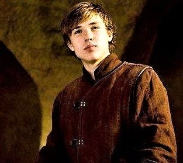
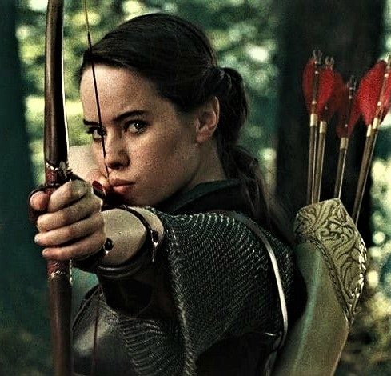
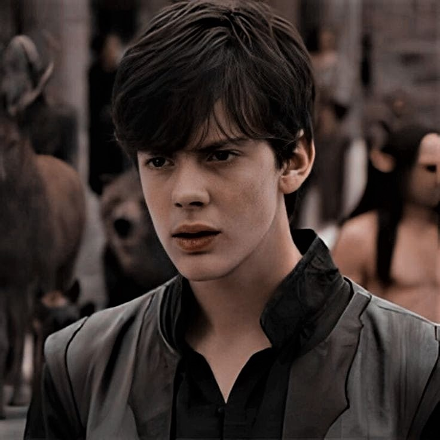
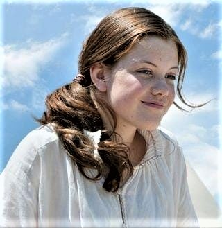

| HOME | BOOKS | MAIN CHARACTERS | MOVIES | MAIN CHARACTERS OF NARNIA |
|  |  |  |  |
PETER PEVENSIE |
SUSAN PEVENSIE |
EDMUND PEVENSIE |
LUCY PEVENSIE |
Peter is the eldest of the Pevensies. In The Lion, the Witch, and the Wardrobe, he kills Maugrim, a talking wolf, to save Susan, and leads the Narnian army against the White Witch. Aslan names him High King, and he is known as Peter the Magnificent. In Prince Caspian, he duels the usurper King Miraz to restore Caspian's throne. In The Last Battle, it is Peter whom Aslan entrusts with the duty of closing the door on Narnia for the final time. |
In The Lion, the Witch, and the Wardrobe, Susan accompanies Lucy to see Aslan die and rise again. She is named Queen Susan the Gentle. In Prince Caspian, however, she is the last of the four to believe and follow Lucy when the latter is called by Aslan to guide them. As an adult queen in The Horse and His Boy, she is courted by Prince Rabadash of Calormen, but refuses his marriage proposal, and his angry response leads the story to its climax. In The Last Battle, she has stopped believing in Narnia and remembers it only as a childhood game, though Lewis mentioned in a letter to a fan that he thought she may eventually believe again: "The books don't tell us what happened to Susan … But there is plenty of time for her to mend, and perhaps she will get to Aslan's country in the end—in her own way." |
Edmund is the second child to enter Narnia in The Lion, the Witch, and the Wardrobe, where he falls under the White Witch's spell from eating the Turkish delight she gives him. Instantiating the book's Christian theme of betrayal, repentance, and subsequent redemption via blood sacrifice, he betrays his siblings to the White Witch, but quickly realizes her true nature and her evil intentions, and is redeemed by the sacrifice of Aslan's life. He is named King Edmund the Just. In Prince Caspian and The Voyage of the Dawn Treader, he supports Lucy; in The Horse and His Boy, he leads the Narnian delegation to Calormen and, later, the Narnian army breaking the siege at Anvard. |
Lucy is the youngest of the four Pevensie siblings. Of all the Pevensie children, Lucy is the closest to Aslan, and of all the human characters who visit Narnia, Lucy is perhaps the one who believes in Narnia the most. In The Lion, the Witch, and the Wardrobe, she initiates the story by entering Narnia through the wardrobe, and (with Susan) witnesses Aslan's execution and resurrection. She is named Queen Lucy the Valiant. In Prince Caspian, she is the first to see Aslan when he comes to guide them. In The Voyage of the Dawn Treader, it is Lucy who breaks the spell of invisibility on the Dufflepuds. As an adult in The Horse and His Boy, she helps fight the Calormenes at Anvard. Although a minor character in The Last Battle, much of the closing chapter is seen from her point of view |